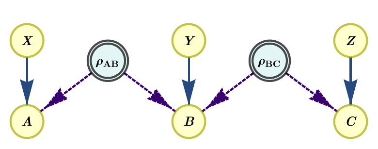
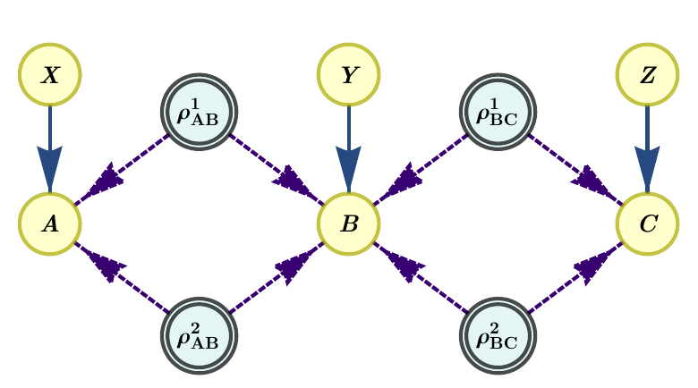

Tutorial
The Inflation package contains implementations of the inflation technique for causal compatibility. Currently it only supports the quantum inflation method of [1]. In the future, we plan adding support to the inflation hierarchy for classical causal compatibility of [2] and dedicated parts for analysing theory-independent correlations. The implementation of Inflation follows an object-oriented design. The workflow comprises of three main steps:
Encode the causal scenario and desired inflation as an instance of
InflationProblem.Generate the associated optimization problem for classical, quantum, or theory-independent inflation (currently, only
InflationSDPis available).Export the problem to a file and/or solve it.
We will now go through the steps above in more detail. This tutorial is available on the documentation webpage and it can also be downloaded as a ready-to-run Jupyter Notebook from the GitHub repository. If already familiar with quantum inflation, the quickest way to get started is to run some examples from the Examples section, which can also be downloaded as a Jupyter Notebook.
We start by importing everything that we will need:
[1]:
from inflation import InflationProblem, InflationSDP
import numpy as np
Encoding the inflation problem
The first object of interest is InflationProblem. When instantiating it, we pass all the relevant information about the causal scenario and the type of inflation we want to perform.
Basics of causal diagrams
Causal relationships are encoded through a Bayesian Directed Acyclic Graph, or DAG for short. The nodes of the graph represent random variables, which can be either observable (visible) or unobservable (hidden). Directed arrows encode causal influences between nodes. Arrows point from parent nodes to the nodes causally influenced by them, called children nodes. The acyclicity property avoids the presence of causal loops.
For applications to physics, another class of random variables is often considered called “settings”. These correspond to observable variables on whose outcome we condition in order to obtain the observed data. For example, this might correspond to measuring one property of a system versus another in an experiment. Furthermore, in physics we also have sources generating quantum correlations. These are modeled through the presence of quantum unobservable variables, which represent quantum systems. Arrows going into a quantum node represent controlling the corresponding quantum system. Arrows going out of the quantum node represent the children of the quantum node generating statistics by measuring the quantum system.
The quantum tripartite line and an inflation
As an example, let us consider the quantum tripartite line, or “quantum bilocality scenario” [3], which corresponds to the scenario where three space-like separated parties (\(A\), \(B\) and \(C\)) measure two quantum systems \(\rho_{AB}\), \(\rho_{BC}\) that never interacted in the past. The subindex of the quantum states indicates which parties have access to and can measure that state. This is a simple scenario where entanglement swapping [4] can be performed, which is at the heart of the quantum teleportation protocol [5]. The corresponding DAG is:

We have three observed random variables, \(A\), \(B\) and \(C\), two hidden quantum variables \(\rho_{AB}\) and \(\rho_{BC}\) of unbounded dimension denoting the physical systems sent to the parties, and three setting variables, \(X\), \(Y\) and \(Z\). We assume all observed variables have cardinality 2, i.e., \(a,b,c,x,y,z \in \{0, 1\}\), where lower case denotes specific values that the random variables (in upper case) can take. In this causal scenario, correlations are generated by measuring the quantum systems conditioned on the values of the settings. These correlations are encoded in the joint probability distribution \(p(a,b,c|x,y,z)\). Notice that the probability distribution is not conditioned on \(\rho_{AB}\), \(\rho_{BC}\) as they are hidden variables.
Quantum causal compatibility and an inflation
One of the fundamental questions to ask is whether a given a probability distribution \(p(a,b,c|x,y,z)\) is compatible with a given causal scenario. The challenge in answering this question comes from the assumption of statistical independence of the quantum sources \(\rho_{AB}\) and \(\rho_{BC}\). The quantum inflation technique is one technique that can give an answer to this question by relaxing the independence constraint. Let us consider an inflation of the bilocal scenario where we take two copies of each source, as in the following figure:

Compatibility of the probability distribution with the inflated graph can be relaxed to a semidefinite program (SDP) using the NPA hierarchy [6]. The independence of the sources is relaxed to a collection of symmetries that can be applied to the SDP. These symmetries arise from the extra sources in the inflated graph being copies of the original sources, e.g., \(\rho_{AB}{=}\rho_{AB}^1{=}\rho_{AB}^2\). If the SDP is infeasible, then we can conclude that the distribution \(p(a,b,c|x,y,z)\) is incompatible with this causal graph, and furthermore, we get an analytical certificate. For more details, see [1].
Creating an instance of InflationProblem
The first step in using Inflation is encoding the scenario to be analyzed. This is done by providing a description of the target DAG, as well as the cardinalities of its visible variables (and optionally a number of possible measurement settings for each one). Also, one must specify the inflation that shall be constructed, by providing the amount of copies of each of the latent variables in the DAG that the inflation will contain. All this information is passed to an instance of
InflationProblem as follows:
[2]:
InfProb = InflationProblem(dag={"h1": ["v1", "v2"],
"h2": ["v2", "v3"]},
outcomes_per_party=[2, 2, 2],
settings_per_party=[2, 2, 2],
inflation_level_per_source=[2, 2])
The DAG is written as a dictionary where the keys are parent nodes, and the values are lists of the corresponding children nodes. In outcomes_per_party and settings_per_party we specify the cardinalities of visible nodes. The parameter inflation_level_per_source determines how many copies of the quantum sources we consider in the inflated graph.
Internally, Inflation handles scenarios as networks, which are bipartite DAGs with one layer of visible nodes (the outcomes) and another layer of both visible (the settings) and latent (the sources) nodes. If the DAG contains visible-to-visible connections (such as in the instrumental scenario [7]), InflationProblem automatically finds an equivalent network and keeps track of the correspondence when setting values and bounds.
Generating the SDP relaxation
Once the scenario is set up, the next step is generating the associated characterization of distributions admitting a realization in the inflation. Currently Inflation supports the characterization of classical and quantum probability distributions via InflationSDP, which generates the characterizations as semidefinite programs. It is an object that takes as input an instance of InflationProblem:
[3]:
InfSDP = InflationSDP(InfProb)
By default, the characterization is assumed to be of quantum correlations. Restricting to classical correlations is possible by passing the argument commuting=True to InflationSDP.
The first main method, InflationSDP.generate_relaxation() generates the SDP relaxation of the chosen inflation.
[4]:
InfSDP.generate_relaxation('npa2')
In the above example, we have chosen NPA hierarchy level 2. For the meaning of these levels, see [6]. For other hierarchies that we support, see the documentation of InflationSDP.generate_relaxation() method, or the Examples section. The important thing to know is that the higher the hierarchy level, the tighter is the SDP relaxation (at the cost of needing more computational
resources).
Running a feasibility problem
If we have a specific distribution in mind, we can test whether such distribution can be generated in a certain causal structure. We can consider for the example the 2PR distribution, which is defined as
and it is known to be incompatible with the quantum tripartite line scenario. We impose the corresponding constraints on the semidefinite program with InflationSDP.set_distribution and then we attempt to solve the program:
[5]:
P_2PR = np.zeros((2,2,2,2,2,2))
for a,b,c,x,y,z in np.ndindex((2,2,2,2,2,2)):
P_2PR[a,b,c,x,y,z] = (1 + (-1)**(a + b + c + x*y + y*z))/8
InfSDP.set_distribution(P_2PR)
InfSDP.solve()
InfSDP.status
[5]:
'infeasible'
The problem status is reported as infeasible, therefore this serves as a proof that the 2PR distribution cannot be generated by measuring two independent quantum states, \(\rho_{AB}\) and \(\rho_{BC}\), in the tripartite line scenario.
We can also export the problem with InflationSDP.write_to_file() method and run it with another solver. Currently, supported formats are .mat for MATLAB, .dat-s for various solvers and platforms (for instance, Yalmip), and .csv for a human-readable output.
Running an optimisation problem
Inflation also supports the optimization of objective functions over the sets of distributions compatible with a given inflation. This is useful for finding bounds of Bell operators in complex multipartite scenarios. For example, we can calculate upper bounds on the value of the Mermin inequality, defined as:
over the tripartite line scenario:
[6]:
InfSDP.generate_relaxation('npa2')
mmnts = InfSDP.measurements
A0, B0, C0, A1, B1, C1 = (1-2*mmnts[party][0][setting][0]
for setting in range(2)
for party in range(3))
InfSDP.set_objective(A1*B0*C0 + A0*B1*C0 + A0*B0*C1 - A1*B1*C1)
InfSDP.solve()
InfSDP.objective_value
[6]:
3.4615797540545383
We get that the value of the Mermin Bell operator cannot achieve a value greater than \(\approx 3.4616\) in the quantum tripartite line scenario. This is less than the algebraic value of \(4\) which is achievable when using tripartite quantum states distributed to \(A\), \(B\) and \(C\).
For more examples and features of the package, check out the Examples section.
References
[1] E. Wolfe, A. Pozas-Kerstjens, M. Grinberg, D. Rosset, A. Acín, and Miguel Navascués, Quantum Inflation: A General Approach to Quantum Causal Compatibility, Phys. Rev. X 11, 021043 (2021), arXiv:1909.10519.
[2] E. Wolfe, R. W. Spekkens, and T. Fritz, The Inflation Technique for Causal Inference with Latent Variables, J. Causal Inference 7, 20170020 (2019), arXiv:1609.00672.
[3] C. Branciard, D. Rosset, N. Gisin, and S. Pironio, Bilocal versus non-bilocal correlations in entanglement swapping experiments, Phys. Rev. A 85, 032119 (2012), arXiv:1112.4502.
[4] M. Żukowski, A. Zeilinger, M. A. Horne, and A. K. Ekert, “Event-ready-detectors” Bell experiment via entanglement swapping. Phys. Rev. Lett. 71, 4287.
[5] C. H. Bennett, G. Brassard, C. Crépeau, R. Jozsa, A. Peres, and W. K. Wootters, Teleporting an unknown quantum state via dual classical and Einstein-Podolsky-Rosen channels, Phys. Rev. Lett. 70, 1895 (1993).
[6] M. Navascués, S. Pironio, and A. Acín, A convergent hierarchy of semidefinite programs characterizing the set of quantum correlations, New J. Phys. 10 073013, arXiv:0803.4290.
[7] T. Van Himbeeck, J. Bohr Brask, S. Pironio, R. Ramanathan, A. Belén Sainz, and E. Wolfe, Quantum violations in the Instrumental scenario and their relations to the Bell scenario, Quantum 3, 186 (2019), arXiv:1804.04119.